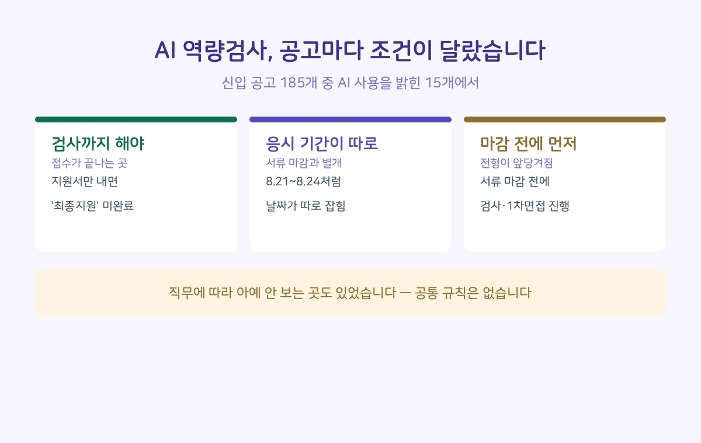
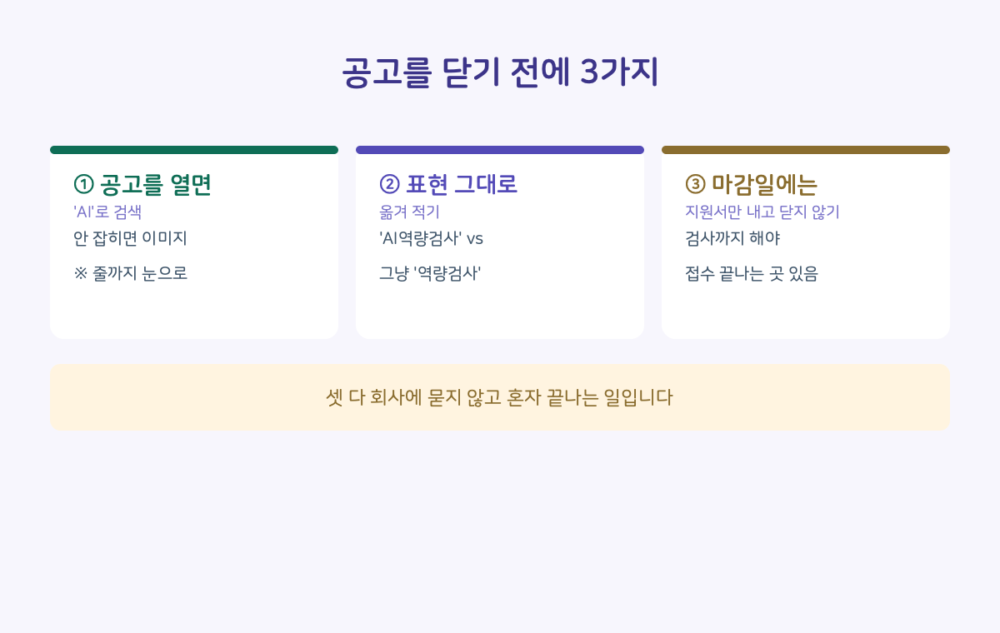

채용공고 185개를 열어서 AI 관련 문구만 뽑아봤습니다. 그중 AI 역량검사나 AI 면접을 쓴다고 적은 공고가 15개였는데, 읽다가 손이 멈춘 문장이 있었습니다.
"※ 지원서 접수 후 AI역량검사까지 완료해야 최종지원 처리됩니다."
지원서를 냈는데 지원이 안 된 상태가 있다는 뜻입니다. 다른 공고에는 이렇게 적혀 있었습니다. "※ AI역량검사까지 완료하여야 지원서 접수 완료".
■ 문제는 이게 공통 규칙이 아니라는 겁니다
15개를 나란히 놓고 보니 조건이 제각각이었습니다.
검사를 마쳐야 지원이 완료되는 곳이 있었습니다. 반대로 서류 합격자만 나중에 보는 곳도 있었습니다. 어떤 공고는 검사 응시 기간이 서류 마감일과 아예 따로 잡혀 있었습니다. 원서접수는 8월 18일까지인데 "AI역량검사 : 2026.08.21.(금) ~ 08.24.(월)"이라고 적힌 식입니다. 또 어떤 공고에는 이런 문장이 있었습니다. "서류전형 기한 마감 전에 AI 역량검사 및 1차 면접이 먼저 진행될 수 있습니다."
마감일까지 시간이 남았다고 생각하고 있다가, 그 사이에 전형이 이미 돌아갈 수 있다는 얘기입니다.
직무에 따라 아예 안 보는 곳도 있었습니다. "직무/경력에 따라 AI역량검사 미실시".
그러니까 "AI 역량검사는 서류 내고 나서 보는 것"이라는 하나의 규칙은 없습니다. 지난번에 그렇게 알고 넘어간 공고가 있다면, 그건 그 회사의 규칙이었을 뿐입니다.

■ 그래서 공고에서 뭘 봐야 하냐면
조건은 대부분 전형 절차 표가 아니라, 그 아래 ※ 뒤에 한 줄로 붙어 있었습니다. 표만 보고 닫으면 놓치는 자리입니다.
1. 공고를 열면 'AI'로 검색(Ctrl+F)해 보세요. 다만 요즘 공고는 포스터 한 장을 통째로 올리는 경우가 많아서, 그럴 땐 검색이 안 잡힙니다. 제가 센 15개 중 9개가 그랬습니다. 안 잡히면 눈으로 전형 절차 아래 ※ 줄까지 내려가 보세요.
2. 표현을 그대로 옮겨 적어두세요. "AI역량검사"와 그냥 "역량검사"는 다른 말입니다. 제가 읽은 185개 중에는 역량검사는 있는데 AI인지 안 밝힌 공고가 23개 있었습니다. 그중에는 "역량검사까지 응시 완료되어야 서류전형이 진행됩니다"라고만 적힌 곳도 있었습니다.
3. 마감일에 지원서만 내고 닫지 마세요. 검사까지 해야 접수가 끝나는 곳이라면, 마감 시각 직전 지원은 그대로 날아갑니다. 한 공고는 아예 이렇게 적어뒀습니다. "※ 접수마감일에는 접속량 증가로 지원서 접수가 원활하지 않을 수 있으므로 이 점 유의하시기 바랍니다."

■ 그런데 정작 이건 어디에도 없었습니다
여기까지가 공고에 적혀 있는 것들입니다. 언제 보라, 안 보면 접수가 안 된다, 며칠부터 며칠까지다.
그 검사 결과를 어디에 쓰는지 적어둔 공고는, 15개 중 0개였습니다.
서류를 거르는 데 쓰는지, 면접 때 참고만 하는지, 점수 비중이 얼마인지 — 한 줄도 없었습니다. 딱 한 곳이 괄호를 열어 "조직적합도 검사(AI역량검사-성향파악)"이라고 용도를 밝혔는데, 그마저도 그 결과가 합격과 불합격에 어떻게 반영되는지는 없었습니다.
안 보면 지원이 취소되는 검사인데, 무엇에 쓰이는지는 지원 전에 알 수 없습니다.
덧붙이면, 15라는 숫자도 "적어도 15"입니다. 185개 중 23개는 공고 전체가 이미지인데 글자가 흐려서, 이미지 속 글자를 읽어주는 프로그램을 돌리고도 저조차 확인하지 못했습니다.
다음 편에서는 결과를 알고 싶을 때 어디에 무슨 말로 요청할 수 있는지, 그 전에 손에 쥐고 있어야 할 게 뭔지를 정리하겠습니다.
여러분이 봐둔 공고는 어느 쪽이었나요. "검사까지 해야 접수 완료였다" 또는 "서류 붙고 나서였다" 한 줄이면 충분합니다. 회사명은 안 쓰셔도 됩니다. 그 한 줄이 쌓이면 제가 센 185개보다 정확해집니다.
근거: 링커리어 채용공고 중 신입 공고 185건 전수 확인 (2026.8.16 수집). 인용 문구는 공고 원문 그대로이며, 확인 못 한 23건은 확인 못 했다고 적었습니다.
처음 셀 때는 15가 아니라 17이었습니다. 한 건씩 눈으로 다시 보니 두 건은 AI 검사가 아니라 필기시험 과목과 채용설명회 제목이었습니다. 검색어로만 셌으면 이 글의 제목이 틀렸을 겁니다.